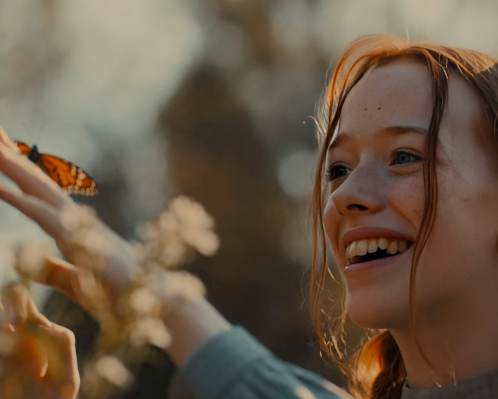

CONTEXTO DA SÉRIE ANNE WITH AN"E"
Sobre o que é a série Anne With An "E"?
Anne With E é uma série canadense transmitida originalmente pelo canal CBC Television. A história acompanha a vida de Anne Shirley, uma jovem órfã que, após uma infância de abusos entre orfanatos e casas de estranhos, é enviada por engano para viver com um casal de irmãos em idade avançada.Com o passar do tempo, a pequena garota de 13 anos transforma a vida de Marilla, Matthew Cuthbert e de toda a cidade com seu jeito extrovertido, sua inteligência e imaginação brilhante. Com o passar do tempo, a pequena garota de 13 anos transforma a vida de Marilla, Matthew Cuthbert e de toda a cidade com seu jeito extrovertido, sua inteligência e imaginação brilhante. As aventuras de Anne abordam temas atemporais e de atual relevância como identidade, feminismo, bullying e preconceito. A série é baseada no livro Anne of Green Gables, escrito por Lucy Maud Montgomery. No Brasil, a série é transmitida pela Netflix. No elenco estão, Amybeth McNulty, Lucas Jade Zumann (Mulheres do Século 20), Geraldine James (Alice no País das Maravilhas), R. H. Thomson (O Preço da Traição) e Dalila Bela (Once Upon a Time). Acesse aqui para mais informações
Características dos personagens principais
| Anne | Gilbert | Dyana |
|---|---|---|
| Órfã e Adotada | Amor pela Medicina | Amor pela Literatura |
| Imaginativa e Criativa | Amizade e Lealdade | Beleza e Amizade |
| Inteligência e Curiosidade | Coragem e Determinação | Obediência e Família |
| Persistência e Resiliência | Empatia e Sensibilidade | Empatia e Compaixão |
ELENCO


Qual o motivo do cancelamento da série?
O cancelamento da série “Anne with an E” foi uma combinação de fatores. Em 2019, a série foi oficialmente cancelada após a terceira temporada. Embora tenha recebido boas críticas, alguns elementos contribuíram para sua descontinuação: Questões Econômicas: Os produtores lutaram para encontrar um novo lar para a série, mas palavras como “Economia”, “Algoritmos” e “Demografia” dificultaram a continuação da produção. Fim da Parceria com a Netflix: Em outubro de 2019, a CBC (Canadian Broadcast Company) encerrou sua parceria com a Netflix, o que afetou o destino da série. A CEO da CBC comparou a Netflix ao imperialismo britânico, afirmando que produzir para o serviço de streaming prejudicava a indústria cinematográfica doméstica no Canadá. Infelizmente, esses fatores culminaram no cancelamento de “Anne with an E”. 
Versão literaria
A série literária Anne de Green Gables (também conhecida como Anne With An E) é uma criação atemporal da escritora canadense Lucy Maud Montgomery. Ela nos apresenta a cativante Anne Shirley, uma órfã de cabelos ruivos e imaginação fértil, que é acidentalmente enviada para viver com Marilla e Matthew Cuthbert, dois irmãos solteiros que vivem em Green Gables, uma fazenda em Avonlea, no Canadá1. A trama explora temas de amizade, amor, redenção e amadurecimento, tornando-se uma história universalmente amada.
Acesse aqui para mais informaçõesAqui está a ordem dos livros focados na personagem Anne Shirley:
- Anne de Green Gables (11 aos 16 anos)
- Anne de Avonlea (16 aos 18 anos)
- Anne da Ilha (18 aos 22 anos)
- Anne de Windy Poplars (22 aos 25 anos)
Temporadas
1ª Temporada
Ao longo da temporada, Anne enfrenta desafios ao tentar se ajustar à sua nova vida em Green Gables, enquanto lida com seu passado difícil e o preconceito da comunidade de Avonlea. Ela faz amizade com Diana Barry, uma garota da vizinhança, e Gilbert Blythe, um colega de escola. A série explora temas como identidade, aceitação, feminismo e questões sociais da época.Enquanto Anne encontra apoio e amor na família Cuthbert, ela também enfrenta conflitos com outras pessoas da comunidade, incluindo Rachel Lynde, uma vizinha fofoqueira, e Josie Pye, uma colega de escola invejosa.
2ª Termporada
Na segunda temporada de "Anne with an E", a jornada de Anne Shirley continua, enquanto ela enfrenta novos desafios e descobre mais sobre seu passado. A temporada começa com Anne ansiosa para frequentar a escola em Avonlea, onde ela espera expandir seus horizontes e aprender mais sobre o mundo.
3ª Temporada
Na terceira temporada de "Anne with an E", acompanhamos Anne Shirley-Cuthbert enquanto ela continua a sua jornada de autodescoberta e amadurecimento na Ilha do Príncipe Eduardo. A temporada se concentra em questões de identidade, pertencimento e relacionamentos.
Temporada 1
- Acompanhamos a jornada de Anne Shirley, uma órfã com um passado traumático, enquanto ela é acolhida pelos irmãos Cuthbert
- Começa a encontrar seu lugar na comunidade de Avonlea.
- Anne é uma jovem imaginativa, inteligente e apaixonada por literatura e pela natureza, mas também carrega consigo um passado marcado por abusos e negligência.
Temporada 2
- Anne Shirley continua sua jornada de autodescoberta em Avonlea
- enfrentando desafios emocionais, explorando questões de identidade e lutando pela aceitação
- enquanto a comunidade enfrenta mudanças e confronta temas como justiça social e diversidade
Temporada 3
- Anne continua sua jornada de autodescoberta, explorando suas raízes e enfrentando seu passado.
- A temporada aborda os relacionamentos entre os personagens principais, incluindo o crescente romance entre Anne e Gilbert Blythe, que enfrenta obstáculos enquanto ambos tentam descobrir seus próprios caminhos na vida.
- No geral, a terceira temporada de "Anne with an E" é uma jornada emocionante e comovente, repleta de momentos de amor, amizade e superação.
Temporada 4
- A quarta temporada de "Anne with an E" foi cancelada principalmente devido a uma combinação de fatores, incluindo questões financeiras e diferenças criativas entre a CBC (Canadian Broadcasting Corporation) e a Netflix, que co-produziam a série.
Abertura da série
Foto de abertura da série: